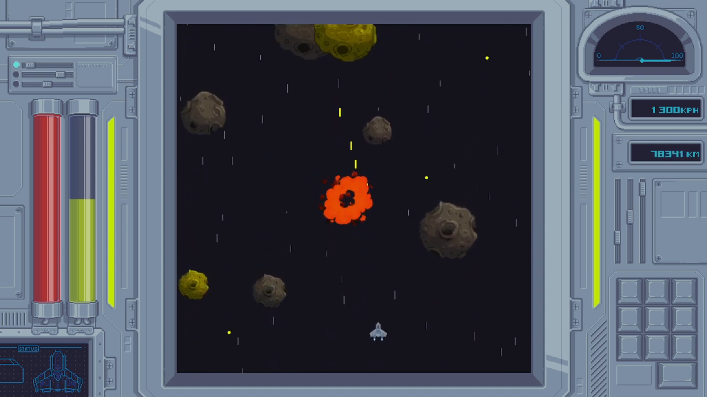
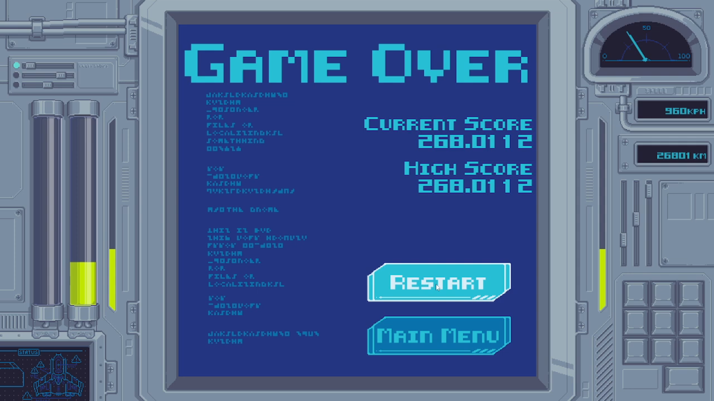

Project Overview
This game was conceived as a fast-paced, speed-centric space shooter. we designed the player's stats and abilities around this central goal. The player collects energy from either a limited trickle of independtly generated pellets, or by destroying asteroids. with this energy, the player is able to charge and fire shots. As they charge, they increase their hit box temporarily and their speed permanently. when the player has maxed out their energy and speed values, they can right click to charge a boost. After which they are permamently slightly faster and this gameplay loop restarts. The game also features a very polished Diegetic UI. All of the player stats are presented through the flavor of a ship's control console, with the gameplay being displayed on the console's screen. The pause and options menus are presented as holographic popups, and the end game is flavored as an error screen.
We'd started as a team of 3 programmers and one producer, later recruiting an artist, and three composers/audio engineers. I'd originally joined the team simply as a programmer, but as time went on, our producer, Ryan Dunagan, became less available. I stepped up to fill in those gaps, and eventually became a producer myself before he had to step away from the project entirely. While we still followed his previous guidance on the direction of our game concept, and the workflows he taught us, I became the one to oversee those workflows. Setting weekly sprints, planning/delegating tasks, and monitoring any obstacles that might stall our progress. I balanced these responsibilities while still keeping up with my role as a programmer. I enjoyed the project management, but I was still passionate about the technical details of the game. This was actually an incredibly beneficial pairing of roles. As my technical involvement was essential towards understanding the progress we were making. In addition to managing the organization of our git repository and communicating with the other pgrammers given how complex our workflow and codebase was. This balance was also incredibly useful when resolving technical issues. Which required not just technical knowledge, but also a broad understanding of the full picture.
The Stats surrounding how the player charged and used their energy were prototyped through parameterized values and Unity's ScriptableObject system
The entity generation systems had their own set of parameterized values, which allowed us to identify how best to simplify the systems later on.
The Diegetic UI was one of the most exciting aspects to emerge from our brainstorming. the console HUD and in-game presentation of the loss, pause, and options menus gave the game a unique flavor that everyone on the team was very proud of.
Technical systems
While no one technical system stands out among my work on Star Charger, each and every aspect of the project has deepened my understanding of both Unity and game development best practices. In particular I enjoyed and learned the most from protoptyping the gameplay mechanics, and managing the Git repository.
The initial concept for our game had mostly do with the movement of the character, with only basic details planned for the energy mechanics and movement of the asteroids. This left substantial space with the potential (but also necessity) to explore what exactly each of those mechanics would look like. I knew that fun couldn't realistically be evaluated without seeing the ideas in action, so I wanted to give us a basis to test them firsthand as quickly as possible. However, I also wanted us to be able to revisit, explore, and iterate on our ideas. A common strategy I used was to frequently parameterize the gameplay values, this allowed us to quickly change (or even temporarily remove) a mechanic without having to rewrite or even recompile our code.
With the player energy and speed mechanics specifically, I also utilized Unity's ScriptableObject system. By building various templates and through simple inheritance structures, we were able to not only quickly swap out various configurations, but even store them on hand for future revisits. This allowed us to move on from an idea without abandoning it altogether. I do somewhat regret that the systems in place ended up being rather complicated (from the perspective of both the players and developers). But thanks to having set up that prototpying infrastructure, I can guarantee that the final result was fun and satisfying. And now that I have experience with the process, I'll be better able to prioritize the components of each system, and keep them more streamlined in the future.
The entity generation systems that handle asteroids and energy were one of the first ones we built, but we kept iterating on them through much of development. By parameterizing the values, we were able to assign different speeds, directions, and frequencies for every entity. The asteroids were also given individual values for health, size, and energy amounts, all of which were correlated. We were also able to assign randomized ranges for the values. By keeping these values accessible, we were able to identify the most important values, minimizing or completely nullifying the ones that turned out to be less impactful or even frustrating. All of the entities that were spawned were funneled through Unity's object pooling system to minimize the performance costs of destruction and reinstanciation of entities.
Even if I hadn't been the producer on this project, I'm sure I still would've been heavily involved and invested in the git management and organization. I've spent a significant amount of time researching git. How it works and how to use it effectively and efficiently. Put simply, I find it incredibly interesting to examine how such a powerful tool interfaces with the systems being built by the developers. It has consequences on not only the technical functionality of your project, but also the collaborative workflow. I learned to stay on top of both of these aspects. Anticipating issues before they came up, and resolving the ones that did, and facilitating the integration of everyone's work. Managing all of this also resulted in me gaining a wide understanding of all of our game systems, which was invaluable for debugging. Any time a teammate ran into an issue or had a question, I was able to tell them exactly where to start looking for the related functionaltiy.